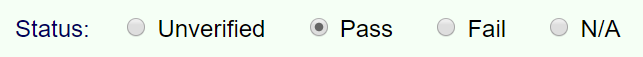

The reporting tool is configured by default to verify that publications meets WCAG Level AA
requirements.
To check for Level AA conformance, simply switch the setting. The list of success criteria to verify
in the next step automatically updates to match the selected setting.
The first section allows you to WCAG Level AA and AAA success criteria to the conformance verification
tab.
Showing these criteria does not change the conformance level being verified, and their status is not
checked when the final report is generated. Showing them allows you to indicate that a publication
meets requirements beyond the base level being tested. If any of these criteria are set to pass or
fail, they will be included in the final report.
Note: To change the WCAG conformance level the publication has to meet, use the
options on the Start tab.
It is also possible to hide content-specific success criteria if you know that they do not apply to
the publication (e.g., scripting requirements).
These options are automatically updated to reflect the content when the Ace JSON report is loaded in
the setup step.
Note that deselecting an option only hides the related criteria from view. The criteria are still
included in the generated report with a "not applicable" status.
Note: The reporting tool does not include the option to conform to
level AAA, as no content can realistically conform to all the requirements of this level.
Evaluating a Publication
The next, and primary, step in manually evaluating the publication is to check the required
conformance requirements. The Conformance Verification tab
provides a list of requirements that must be passed for each WCAG success criterion and each
additional EPUB requirement.
You will need to step through each success criterion and check that it is satisfied by the content.
Each criterion includes a status section to simplify tracking the overall conformance, and to
facilitate generating a report at the end of the evaluation.
The status section appears after the links to the supporting documentation and includes
pass, fail and not applicable options.
The following list describes each of the status options.
Unverified
All success criteria are set to unverified by default, although this status may be
changed when the Ace JSON report is loaded and analyzed (e.g., some criteria might be set to
not applicable).
All success criteria for the conformance level specified in the evaluation setup must be changed to one of the following status options prior to
generating the final report. Failure to do so will result in a validation error. Note that
Level AAA success criteria may be left unverified, in which case they will not be included in
the final report.
Pass
After verifying that the requirements of a success criterion are satisfied, set its status to
pass.

Do not use the pass setting for success criteria that are not applicable to the content. For
example, if the publication does not contain audio or video, do not pass it on success
criteria for audio and video content. Doing so suggests that the publication contains content
it does not. Use the not applicable status in these cases.
Fail
If the publication fails a success criterion, setting the status to fail will reveal a
field to describe why it failed.
Clicking the fail status reveals the text field where you can note the
failure(s)
Information added to this field is included in the generated report for the publication.
N/A
Set the status to "N/A" (not applicable) for any criteria that are not applicable to the
publication.
Do not state that a publication passes criteria that are not applicable to its content, as
this practice is misleading to anyone reading the final report.
An optional note field is provided after the status section for recording any general notes you wish
to provide. These notes are included in the generated report.
Clicking the "Add note" checkbox reveals the text field where you can write the
note.
When checking each criterion, ensure that the publication meets all the specified requirements.
Whenever possible, you will be directed where to look for potential problems so that you do not have
to review the entire publication. This process typically involves referencing content lists in the
Ace HTML report, such as the list of all images.
In many cases, it will not be possible to help pinpoint potential error locations — you will
have to inspect the source markup of the publication for errors. This is especially true for WCAG
success criterion 1.3.1, for example, which requires that information and relationships be expressed
in the markup. Automatic testing tools have limited capabilities for determining when a structure has
been mistagged.
Additional links are also provided to help you understand the various success criteria. These include
direct links to the WCAG documentation, as well as links to markup best practices. If you are unsure
about any aspect of a requirement, take the time to review these documents first.